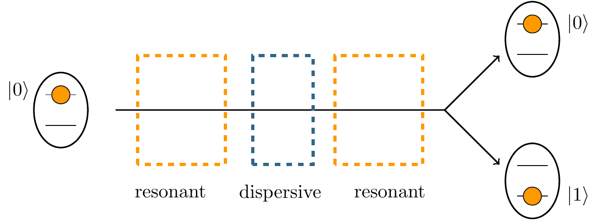

1.5 Qubits, gates, and circuits
Atoms, trapped ions, molecules, nuclear spins and many other quantum objects with two pre-selected basis states labeled as \(|0\rangle\) and \(|1\rangle\) (from now on we will call such objects quantum bits or qubits) can be used to implement simple quantum interference. There is no need to learn about physics behind these diverse technologies if all you want is to understand the basics of quantum theory. We may now conveniently forget about any specific experimental realisation of a qubit and represent a generic single qubit interference graphically as a circuit diagram:7

This diagram should be read from left to right. The horizontal line represents a qubit that is inertly carried from one quantum operation to another. We often call this line a quantum wire. The wire may describe translation in space (e.g. atoms travelling through cavities) or translation in time (e.g. a sequence of operations performed on a trapped ion). The boxes or circles on the wire represent elementary quantum operations, called quantum logic gates. Here we have two types of gates: two Hadamard gates \(H\) (think about resonant interactions) and one phase gate \(P_\varphi\) (think about dispersive interaction), where8 \[ H=\begin{bmatrix} \frac{1}{\sqrt2} & \frac{1}{\sqrt2} \\\frac{1}{\sqrt2} & \frac{-1}{\sqrt2} \end{bmatrix} \quad\text{and}\quad P_\varphi = \begin{bmatrix} 1 & 0 \\0 & e^{i\varphi} \end{bmatrix}. \]
The input qubits appear as state vectors on the left side of circuit diagrams, and the output qubits as state vectors on the right. The product of the three matrices \(HP_\varphi H\) (see Figure 1.3) describes the action of the whole circuit: it maps input state vectors to output state vectors,9 \[ \begin{array}{lcr} |0\rangle & \mapsto & \cos\frac{\varphi}{2}|0\rangle - i\sin\frac{\varphi}{2}|1\rangle, \\|1\rangle & \mapsto &- i\sin\frac{\varphi}{2}|0\rangle + \cos\frac{\varphi}{2}|1\rangle. \end{array} \]
Do not confuse the interference diagrams of Figure 1.1 and Figure 1.3 with the circuit diagram. In the circuit diagrams, which we will use a lot from now on, a single qubit is represented by a single line.↩︎
Global phase factors are irrelevant, it is the relative phase \(\varphi =\varphi_1-\varphi_0\) that matters. In a single qubit phase gate we usually factor out \(e^{i\varphi_0}\), which leaves us with the two diagonal entries: \(1\) and \(e^{i\varphi}\).↩︎
\(HP_\varphi H =\begin{bmatrix}\cos\frac{\varphi}{2} & -i\sin\frac{\varphi}{2}\\\ -i\sin\frac{\varphi}{2}& \cos\frac{\varphi}{2}\end{bmatrix}\).↩︎